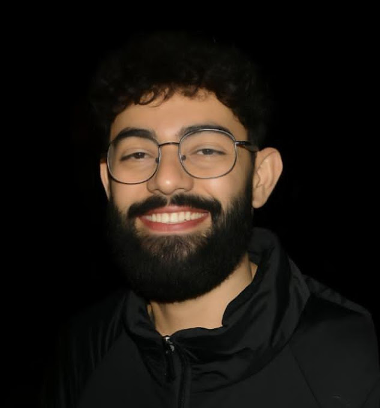
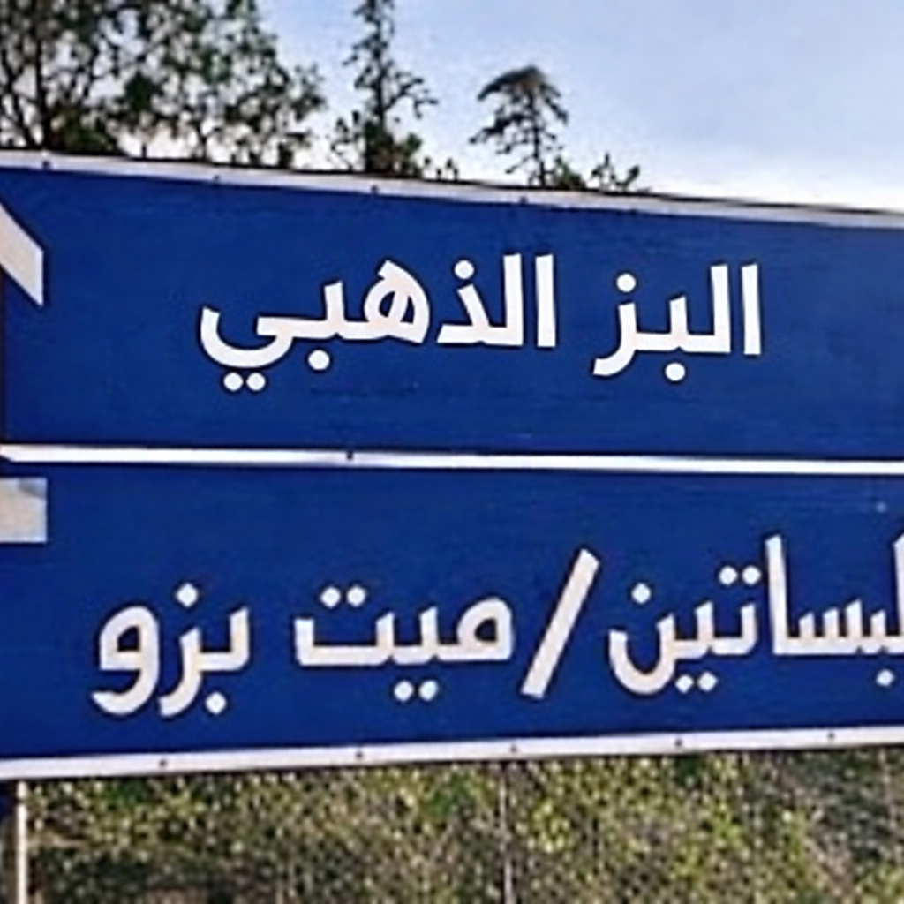

في منعطف درامي يفوز المتسابق يحيا وائل في النسخة السابعة و عشرين للبز الذهبي. بعد تغلبه عن حامل اللقب النسخة الماضية تامر البزاوي تشهد عزبة 100 البز لبطل جديد


بعد انتصار المتسابق أكد لنا انه سعيد أن الجائزة ارتفعت عن العام الماضي و يقول:"750 لمونة ميكفيش أي حد ده ميرضيش ربنا, أنا فرحان أن بعد تعبي زادت الجايزة ل1000 لمونة, الزيي ده محتاج اكتر من كدة برضه".
و شملت و المسابقة العديد من المنافسات مثلاقدم ايسكاب و طول القرون و حدث خلاف اثناء المسابقة و انفعل تامر البزاوي على يحيا و شتم يحيا بالام و رد يحيا في انفعال قائلا "انت عبيط يسطا؟"
و تم تتويجه من شيخ العزبة "أبو البزاز" بالجائزة و لقب البز المتوسط و أكد لنا يحيا أنه سيعود أقوى لينافس في مسابقة البزاز المحترفة تحت 80 كيلو. و يؤكد انه ليس خائف من حامل اللقب الحالي "عصام نياكة".
الكاتب: أحمد وليد.